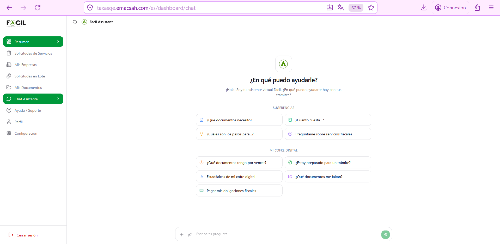
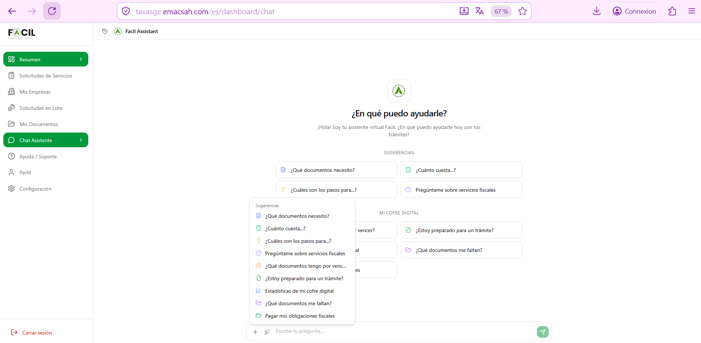
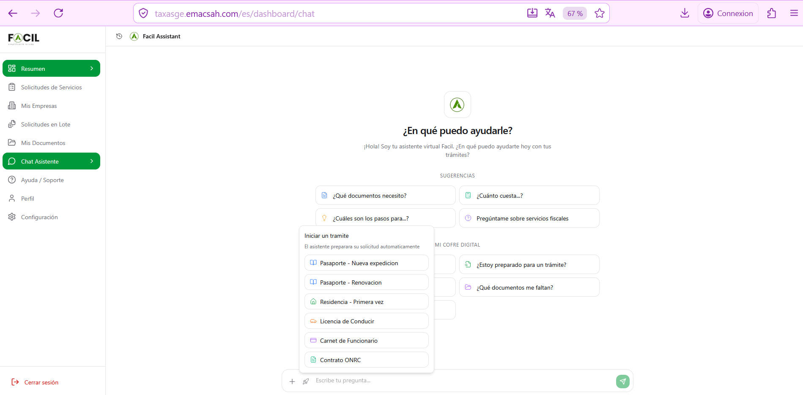
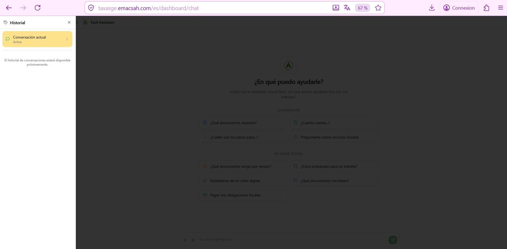
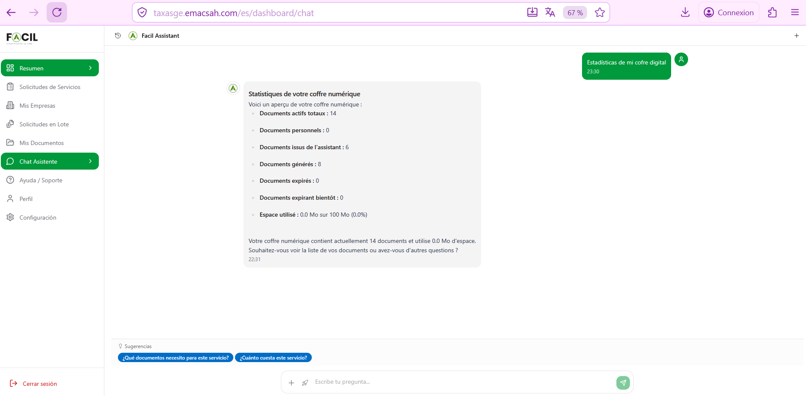
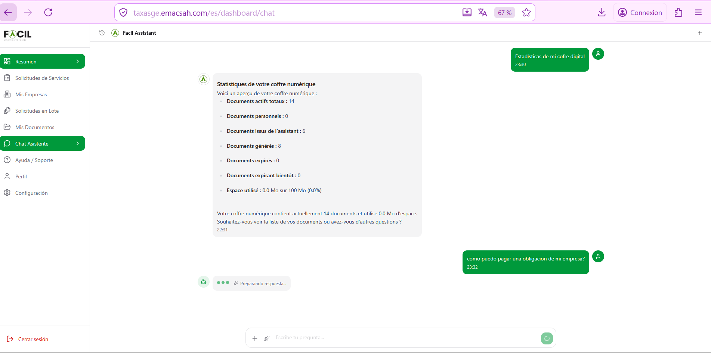
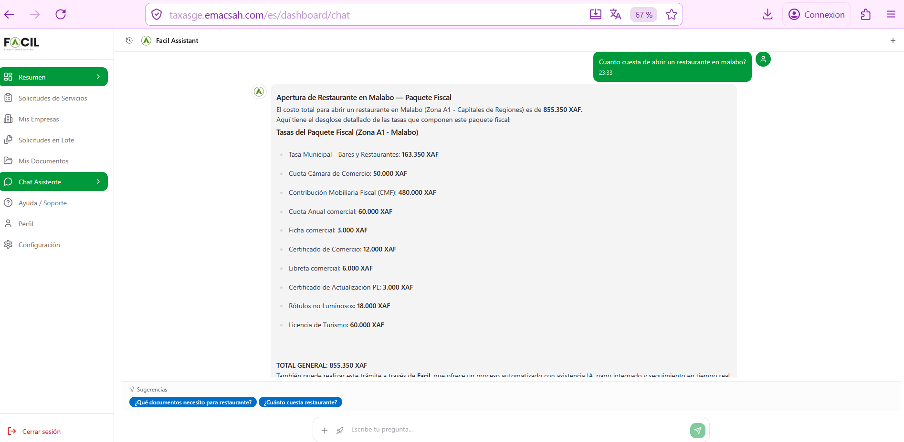
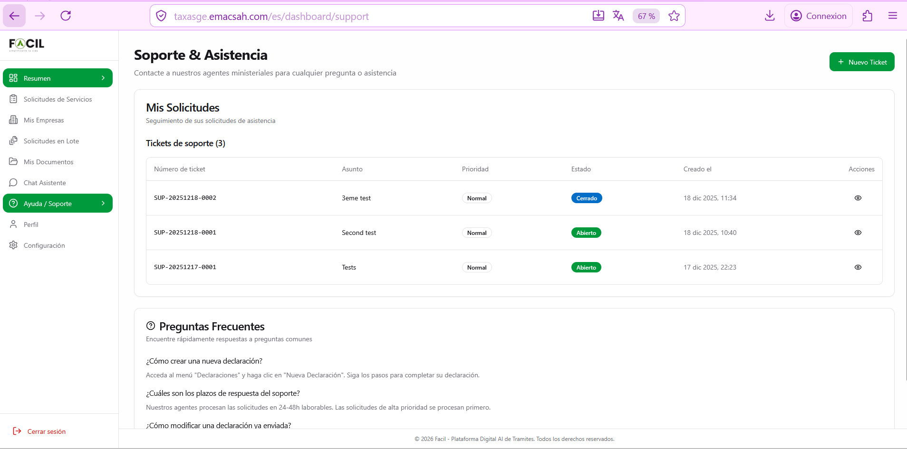
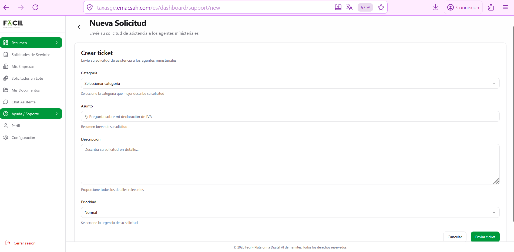
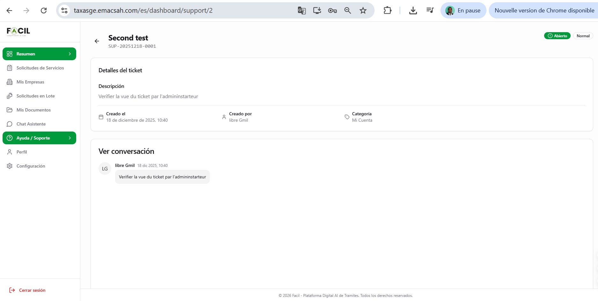

Asistente IA conectado y Soporte
Esta página combina 2 funciones complementarias para usuarios conectados : el asistente IA conectado (acceso a su contexto personal — coffre digital, empresas, solicitudes) y el sistema de tickets de soporte (problemas técnicos o administrativos).
1. Asistente IA — pantalla inicial
Acceso : menú lateral → «Chat Asistente». Al abrir, ve un mensaje de bienvenida personalizado y 4 sugerencias contextuales + una sección «Mi Cofre Digital» con 5 quick actions:
- Documentos — análisis automático de documentos faltantes
- ¿Cuánto cuesta? — simulación de costes
- Pasos — guía paso a paso de un trámite
- Servicios fiscales — info detallada por servicio
- Cofre digital — vencimientos, preparados, estadísticas, faltan, pagar obligaciones

2. Acciones rápidas (popovers)
Dos popovers ofrecen acceso rápido a las acciones populares:


3. Conversaciones — ejemplos reales
El asistente conectado responde con contexto personal : conoce sus empresas, sus solicitudes, sus documentos, y puede hacer cálculos personalizados (paquetes fiscales para una empresa específica).

Ejemplo 1 — Estadísticas del cofre digital

Ejemplo 2 — Pago de obligación de empresa

Ejemplo 3 — Paquete fiscal personalizado

4. Sistema de tickets de soporte
Para problemas técnicos o administrativos no resolubles por el asistente IA, use el sistema de tickets. Acceso : menú lateral → «Ayuda / Soporte». Lista de sus tickets con :
- Identificador SUP-YYYYMMDD-XXXX
- Asunto + estado (Abierto / En proceso / Resuelto / Cerrado)
- Prioridad (Baja / Normal / Alta / Urgente)
- Categoría (Cuenta / Pago / Trámite / Documentos / Técnico)

5. Crear un ticket
Pulse «+ Nuevo Ticket». Formulario sencillo:
- Categoría — selector entre las 5 categorías disponibles
- Asunto — descripción corta (máx 100 caracteres)
- Descripción — texto detallado del problema (con posibilidad de adjuntar archivos)
- Prioridad — selector entre 4 niveles (Normal por defecto)

Tras enviar, el ticket recibe un identificador SUP-YYYYMMDD-XXXX y aparece en su lista. El equipo de soporte responde en 24-72 horas hábiles según la prioridad.
6. Conversación en un ticket
Pulse un ticket en la lista para abrir su detalle. La página muestra:
- Cabecera con asunto + identificador + badges (estado + prioridad)
- Detalles : descripción, fecha de creación, creador, categoría
- Conversación : intercambio de mensajes con el agente de soporte
- Adjuntos : capturas, documentos compartidos en la conversación
- Botones : responder, marcar como resuelto, cerrar (definitivo)
